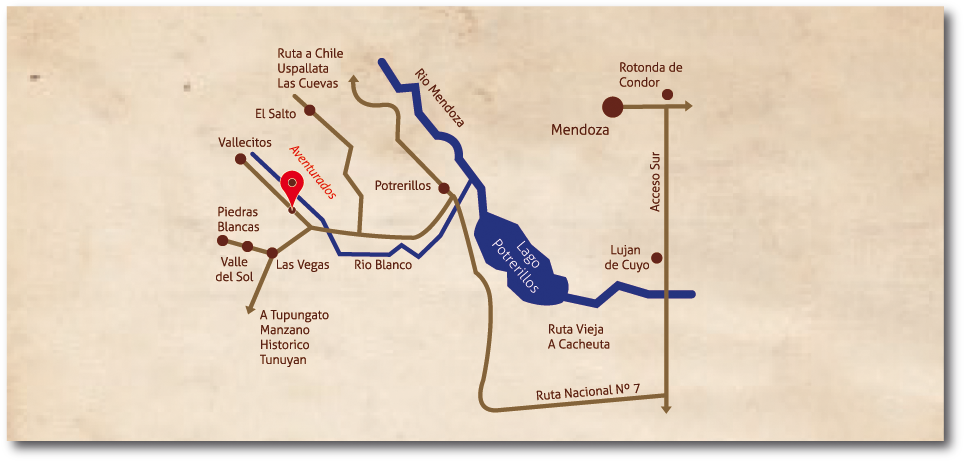

AVENTURADOS CABAÑAS
DISPONIBILIDAD
CABAÑA I
CABAÑA II
--->!!Check in 14.00 hs check out 10.00 hs¡¡<---
Servicios que ofrecemos
• Desayuno seco (opción celiaco)
• Vino de bienvenida
• Cocina con horno
• Heladera con freezer
• Cafetera
• Tostadora
• Vajilla completa
• Servicio de blancos con recambio cada tres días(sabanas, toallón y toalla)
• Frazadas
• Aire acondicionado: frio, calor
• Calefacción: a gas | losa radiante
• Agua caliente 24 hrs
• Tv led (c/directv)
• Equipo de audio
• Parrillas individuales
• Bicicletas
• Acceso al Rio Blanco desde el complejo
• Alarma
• Solárium (Disponible solo en cabaña nº II)
• Baño con columna de hidromasaje (Disponible solo en cabaña nº II)
Recreación en la zona
A continuación se detallan las actividades destacadas que pueden realizar durante su estadía:
• Excursiones
• Esquí
• Pesca
• Caminatas
• Cabalgatas
• Rafting
• Gastronomía
• Avistaje de aves
• Bicicletas
• Cuatris
• Navegación en velero
Lugares de Interés:
• Dique – Lago Potrerillos 15 km
• Centro de Ski Vallecitos 15 km
• Valle de Uco 60 km
• Ciudad de Mendoza a 75 km
• Ciudad de Uspallata 75 km
• Puente del Inca 135 km
• Cerro Aconcagua 140 km
• Limite con Chile 160 km
• Ciudad de San Rafael 250 km
• Ciudad de Malargue 450 km
• Centro de Ski Las Leñas 460 km
¿Cómo llegar a Aventurados Cabañas?
